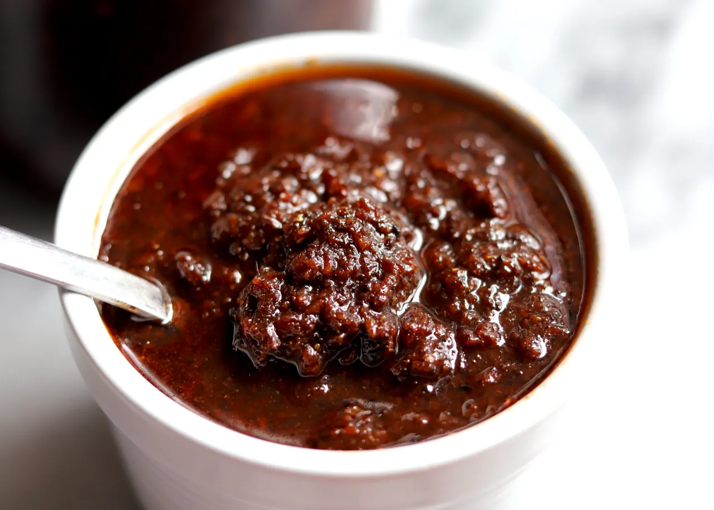

Shito Recipe

Ingredients
- 2 liters of vegetable oil (or enough to cover ingredients while cooking)
- 2 large yellow or white onions, blended
- 50g ginger root, peeled and blended
- 6–8 cloves of garlic, peeled and blended
- 8 Scotch bonnet or habanero peppers, or more to taste
- 2 cups ground dried fish (like herring or anchovies)
- 1 cup ground dried shrimp
- ½ cup tomato paste (optional, but adds richness)
- 1 tbsp aniseed, ground
- 1 tsp rosemary, ground
- Salt or seasoning cubes to taste
Instructions
- Blend the aromatics: In a food processor, blend the onions, ginger, garlic, and peppers into a smooth paste. It is important to use as little water as possible, as you will cook all the moisture out later.
- Prepare the dry fish and shrimp: Grind the dried fish and shrimp into a fine powder or coarse flakes. You can do this with a food processor or a spice grinder.
- Heat the oil: In a very large, heavy-bottomed pot, heat the oil over medium heat.
- Add the blended aromatics: Carefully add the blended onion, ginger, and garlic mixture to the hot oil.
- Cook out the moisture: Cook and stir frequently for about 30–45 minutes, or until all the moisture has evaporated and the paste has dried out and browned. This is a crucial step for preventing mold and ensuring a long shelf life.
- Fry the tomato paste: If using tomato paste, add it now and stir constantly for another 15–20 minutes. The paste will darken in color and lose its raw taste.
- Add the seasonings and powders: Stir in the ground chili pepper, ground dried fish, and ground dried shrimp. The sauce will begin to turn from reddish-brown to a much darker color.
- Add spices: Mix in the ground aniseed, rosemary, and other powdered spices, if using.
- Simmer and stir: Reduce the heat to low and continue to cook the mixture for 1 to 1.5 hours. Stir every 10–15 minutes to prevent the sauce from burning and sticking to the bottom of the pot.
- Develop the color: The sauce will continue to darken as it cooks and caramelizes. Once it has reached a very deep brown or black color, it is ready.
- Adjust seasoning: Taste and add salt or seasoning cubes as needed
- Cool completely: Remove the pot from the heat and allow the shito to cool completely before storing.
- Jar it: Transfer the cooled shito into sterilized, airtight glass jars.
- Use extra oil for preservation: Make sure there is a layer of oil covering the top of the shito in each jar. This seals the sauce and helps preserve it.
- Store: For long-term storage, keep the shito in the refrigerator. Use a clean, dry spoon every time you use it to prevent spoilage.
Links